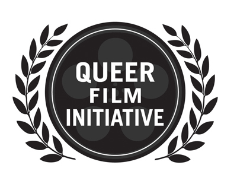

past performance |
|||
| 
Queer Film Initiative Launch Party showtimes & tickets:January 26 @ 8PM This party celebrates the launch of the Wild Project's Queer Film Initiative. The party will feature screenings of films curated and hosted by legendary B Movie Maven Lola Rocknrolla. Dates and details about the initiative's first annual East Village Queer Film Fest will be announced at the party. Wild Project's Queer Film Initiative is being presented in association with the New York No Limits Film Series. Lola Rocknrolla (Queer Film Initiative Launch Curator) has written and directed six shorts, a rock musical, a TV pilot and a national PBS show. Her films have played in festivals worldwide, including OutFest (LA), Frameline (San Francisco), Feast (Sydney, Australia), New York Underground (NYC), Paris Film Festival (Paris, France), and Mix Brazil (Sao Paulo) and many more. Lola makes "Gaysploitation" and all of her films are indulgently high camp. "Dragzilla", "Night of the Living Gay", "I was a Tranny Werewolf", "Brunch", "Nefertitty" and her newest "Nefertitty in Space" keep the John Waters tradition of filth comedy alive. Lola wrote and directed "Homo The Musical" which has had three runs to date (The Wild Project, NYMTF) Lola is currently working on her feature length horror/comedy "The Supermarket". The Wild Project (Producing Artistic Director Ana Mari de Quesada) is a theater, film, music, and visual arts venue that presents diverse, engaging, inspiring, and entertaining works to the vibrant and growing community of Alphabet City in New York’s East Village, while bringing together the artists and the environment in a unique way. Founded in 2007, the wild project is an innovator among arts venues, providing an eco-friendly theater and gallery where the artists and space nurture each other. The company is dedicated to creating an environment that supports the artists, and to cultivating artists that support the environment. With an eco-conscious approach to presenting the dynamic works of hundreds of emerging artists each year, the wild project offers an artistic and environmental education for patrons of all ages, interests, and incomes in its community. New York No Limits Film Series (Co-Directors Robert Wagner and Thomas Escovar) is an ongoing collection of screenings that presents the best films from around the world in the most unique and dynamic arts city in the world. NYNL provides filmmakers the opportunity and support to explore innovative, taboo and diverse subjects. The goal of NYNL is multi layered and broad; to create a film program of the most genre diverse, multi cultural and visionary independent films from around the world. NYNL seeks to program films that reflect the essence of the filmmaker’s vision, daring in nature and imbued with stories that cross the line of commercial intent. Ultimately, NYNL wishes to give filmmakers who take profound leaps a platform while extending the boundaries and canvass of conventional film with programs showcasing the most daring visions in film today. |
upcoming performances |
|||
 |
|||
| EVQ Film Festival 2018 August 20-25 |
|||
performance archives |
|||
| 2018 | 2017 | 2016 | 2015 |
| 2014 | 2013 | 2012 | 2011 |
| 2010 | 2009 | 2008 | 2007 |